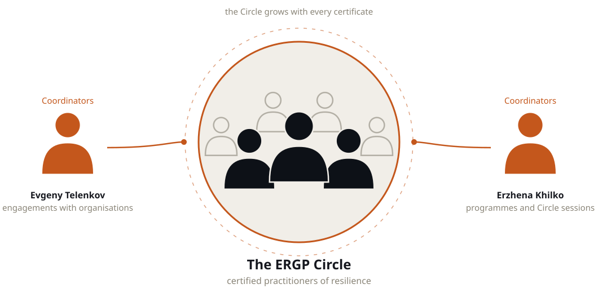

Certification in business resilience governance for people who answer for continuity in Russia — from board-level risk appetite to the auditor's report. Written in English for international companies with Russian operations, and grounded in the standards their local entities are actually held to.
19,900 RUBone payment · six months of access to the materials
After payment, your enrolment email arrives within 24 hours. You enter the email on the payment page.
Every module ends with a test and a working artefact that stays with you.
How resilience is governed at the top of a company. Risk appetite for disruption and how a board approves it, committee architecture and delegation of authority. Separate chapters cover the three lines of defence and the role of the chief risk officer.
Connecting enterprise risk management to business continuity: ISO 31000 and the risk register, key risk indicators and early warning, scenario analysis and stress tests. A separate block covers using AI for risk monitoring.
Translating resilience into money. Running a business impact analysis (BIA), setting recovery targets — maximum tolerable period of disruption, recovery time and recovery point objectives. Costing a day of downtime and building the investment case for each measure.
What to do once a risk has actually landed. The crisis team and escalation, communications under pressure, decision-making with incomplete information. A separate block covers the exercise programme and post-exercise reporting.
ISO 22301 in depth, including the Russian national profile GOST R ISO 22301 that local entities are audited against. The international layer covers DORA in the EU and the Bank of England operational resilience regime. The core skill of the module is closing several sets of requirements with one system.
How to show management and the auditor that the system works. The resilience dashboard, the report for the board, audit readiness. The module closes with a maturity model.
The programme ends with a final assignment. You write a 3-5 page resilience report on your own organisation and review it with an expert in a one-to-one online session.
The programme results in a personal, numbered ERGP certificate (Enterprise Resilience Governance Professional).

Personal numbered ERGP certificate. Sample shown.
The public registry opens with the first cohort. To verify a certificate today, write to info@risk-place.ru — we reply the same day.
These are not marketing mock-ups but actual chapters of the programme, exactly as a participant sees them: the author's text, diagrams and self-check questions.
The chapters shown are the English edition. The same programme is also published in Russian — the full text, the tests and the final assignment.

Click a screenshot to enlarge.
The screenshots above are static. In 20 minutes on Zoom we will walk you through the ERGP programme live and answer your questions. On the demo you will see:
After payment, your enrolment email arrives within 24 hours — you enter the email on the payment page.
Payment by invoice is available — write to info@risk-place.ru and we will issue an invoice for a legal entity.
Team access is arranged separately; format and terms are agreed with you.
ERGP stands for Enterprise Resilience Governance Professional — an online course and certification in business resilience governance. This edition is written in English for the Russian market; a separate edition for the Gulf lives at risk-place.org.
Same discipline, different market. This edition is priced in roubles and built around the standards Russian entities are audited against, including GOST R ISO 22301. The risk-place.org edition is built for the Gulf, around NCEMA and central bank requirements there.
You work through ERGP at your own pace and start any day. Access to the materials runs for 6 months from payment — enough to complete all six modules, work through the self-checks and revisit chapters before the final assignment.
A personal ERGP certificate with a unique number — a risk-place certificate of completion, not a state document. Its value is the assessment behind it: six tests and a reviewed final assignment. Authenticity is verified by number.
It is a systematic programme with assessment, not a recording of lectures: a self-check after each part, a test after each module, and a final assignment reviewed with an expert.
Yes, team access is available. Write to us and we will agree the format and terms.
By invoice. Write to info@risk-place.ru — and we will issue an invoice from the organisation.
Working in the Gulf instead? The regional edition is built around NCEMA and central bank requirements there, and is published in English and Arabic. Gulf edition — risk-place.org.

The certificate is the entry. Passing ERGP admits you to the Circle, a private community of certified practitioners coordinated by the founders. One Circle for the Russian, English and Arabic editions; small today, it grows with every certificate issued.
Curated by Erzhena Khilko; engagements coordinated by Evgeny Telenkov. More about the Circle →

Chief Risk Officer of American Express Bank and its payment system operator, 2010–2024; chair of the Risk Committee. Built risk governance across twelve business units on the Three Lines of Defence model with zero audit findings; ran ICAAP under Basel III Pillar 2, RCSA across fifteen core processes and the continuity plan with annual test cycles. Earlier: head of risk at Bank of Cyprus Russia, corporate finance at Deloitte, audit at Ernst & Young. She owns the learning design, the cohort schedule and the student experience across all our programmes and curates the ERGP Circle.

Fifteen years leading risk functions in large companies. Built business continuity from zero at Nornickel — more than 20 continuity plans. Chief Risk Officer of a $20bn petrochemical megaproject (AGCC, SIBUR) with over 200 construction risk indicators. Risk consulting at Ernst & Young, risk management at Beeline and Rosneft. Deputy chair of Technical Committee 010 "Risk Management" at Rosstandart. Has prepared more than 300 specialists.